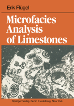
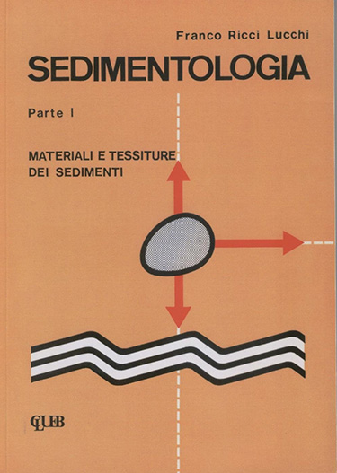
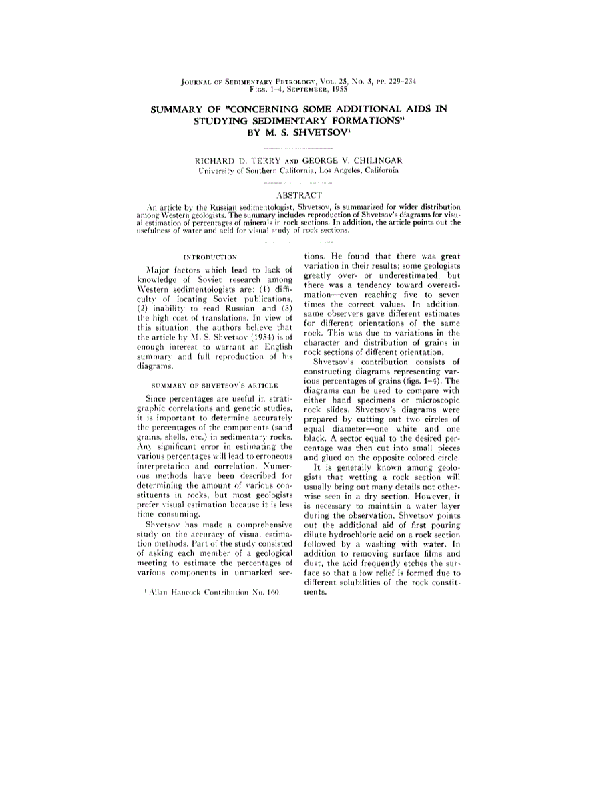

Alessandro Gentilini, March 2020
References
 Erik Flügel, Microfacies Analysis of Limestones, Springer 1982.
 Franco Ricci Lucchi, Sedimentologia - Parte I - Materiali e tessiture dei sedimenti, CLUEB 1980.
 Richard D. Terry, George Varos Chilingar; Summary of "Concerning some additional aids in studying sedimentary formations," by M. S. Shvetsov.Journal of Sedimentary Research;(1955) 25 (3): 229–234.